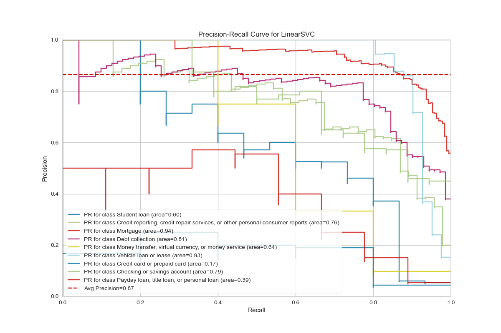
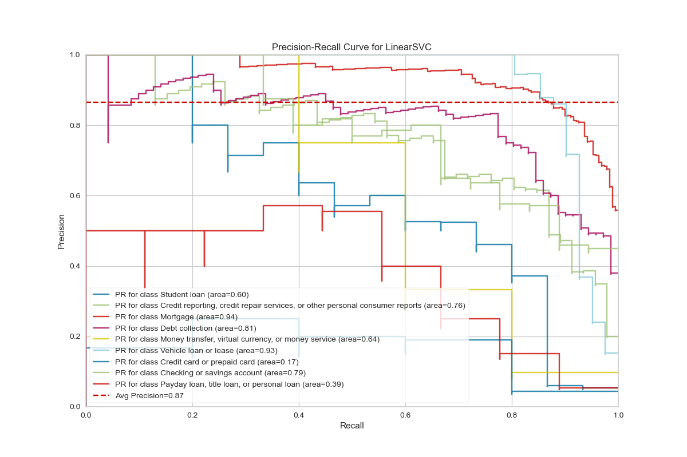
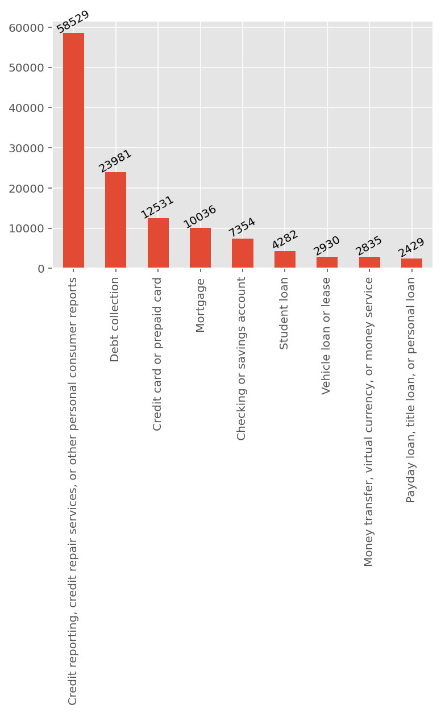
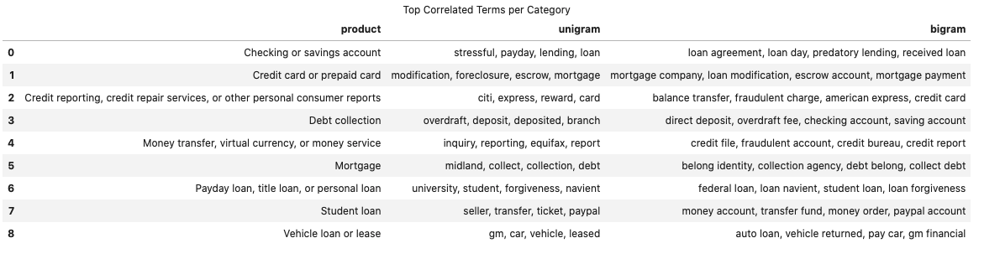
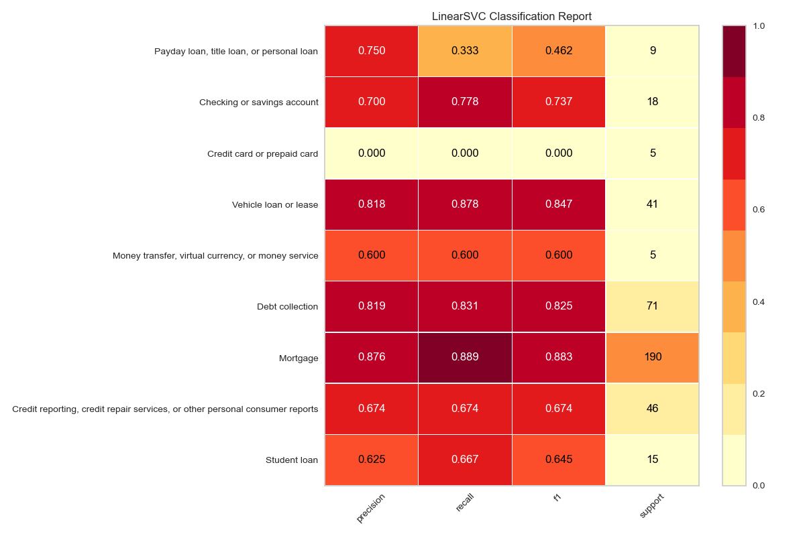
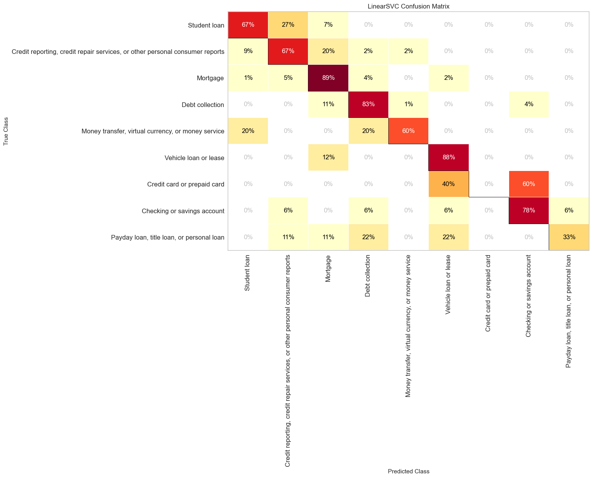
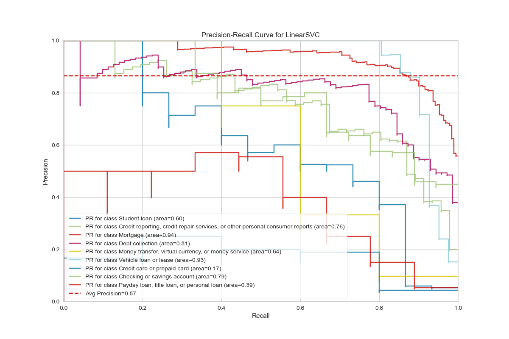

The dataset is obtained from the public data from data.gov website under the domain consumer-complaint-database. The Consumer Complaint Database is a collection of complaints about consumer financial products and services that we sent to companies for response. The database generally updates daily. So, each day when we download the dataset, it may be larger than the previous dataset.
The dataset has above 1 million rows and 18 columns out of which, for the text data category classification, we are only interested in two features: Product and Consumer complaint narrative.
This project aims to accurately classify the Product category of the complaint. There are more than 10 categories of the product such as Mortgage, Debt collection and so on. Our aim is to read the text complaint and classify as on of these category.
NOTE
Originally there are more than 10 categories in original database, but some of the categories are
ambiguous, such as there are three different categories Credit card, Prepaid card, and Credit card or prepaid card. If we have a given complaint about credit card, what should it be classified as? Credit card or Credit card and prepaid card ? To avoid this problem the ambiguous categories are merged into one single categories and finally we have only 10 different categories.
For a sample of 2,000 data, the category distribution looks like this:

Usually the written text is full of informal language and requires cleaning the text before we proceed with analyzing the text. For example, we need to remove the STOPWORDS and expand the contractions. Data cleaning strategy:
areYou ==> are YouYou ==> youyou're ==> you arehi ! ==> higr8 ==> grha ha ==> haI am good ==> goodapples ==> appleFor the text processing tasks (NLP), we usually use a method called Term Frequency - Inverse Document Frequency.
Term Frequency:
This gives how often a given word appears within a document.
TF = Number of times the term appears in the doc
----------------------------------------------
Total number of words in the doc
Inverse Document Frequency:
This gives how often the word appears across the documents.
If a term is very common among documents (e.g.,the, a, is),
then we have low IDF score.
Number of docs the term appears
DF = -----------------------------------
Total number docs in the corpus
But, conventionally, document frequency (Df) is defined as log of ratio,
Number of docs the term appears
DF = ln ( ----------------------------------)
Total number docs in the corpus
Term Frequency – Inverse Document Frequency TF-IDF:
TF-IDF is the product of the TF and IDF scores of the term.
TF
TF-IDF = ------
DF
We can use scikitlearn text vectorizer class sklearn.feature_extraction.text.TfidfVectorizer to get
the vectorized form of given text data. Then using feature selection (sklearn.feature_selection.chi2) we get
following top most unigrams and bigrams for each categories:

We can not use the raw text data as the input for scikit-learn classifiers.
We first need to vectorize them and convert the words to number. Here, in this
project I have used the Tf-idf vectorizer with ngram of (1,2) and tried various
classifiers. Among many classifiers, I found svm.LinearSVC gave me the best accuracy.
For the 2019 data with sampling of 2000 samples with random seed of 100, I got the
accuracy of 0.8125 for the test data. For the full data of 2019 (124,907 almost 125k)
after splitting train-test as 80%-20%, I got the accuracy of 0.8068.



Here, we have so far used only the small portion of the data (2,000 samples out of million samples) and used scikit-learn models for the text analysis. But, for the real world data, we may need to use all the data for better performances.
For large data, pandas crashes and we need to look for alternative methods such as Amazon AWS or IBM Watson. Also, we can use the open source modules such as dask or pyspark which can scale up to multiple gigabytes of data. For this project, I have used both pyspark and Amazon AWS servers.
NOTE:
Pyspark is an immature library. It was borrowed from scala and many functionalities are still need to be implemented. For example, while reading the complaints.csv file, using pandas we can simply use pd.read_csv, however, pyspark is not sophisticated enough to read the csv file automatically when it has multiline. To circumvent these obstacles we can use spark read option with multiLine=True, escape='"'.
For text data processing using pyspark, here I have used following pipelines:
from pyspark.ml.feature import Tokenizer,StopWordsRemover,HashingTF,IDF
tokenizer = Tokenizer().setInputCol("complaint").setOutputCol("words")
remover= StopWordsRemover().setInputCol("words").setOutputCol("filtered").setCaseSensitive(False)
hashingTF = HashingTF().setNumFeatures(1000).setInputCol("filtered").setOutputCol("rawFeatures")
idf = IDF().setInputCol("rawFeatures").setOutputCol("features").setMinDocFreq(0)